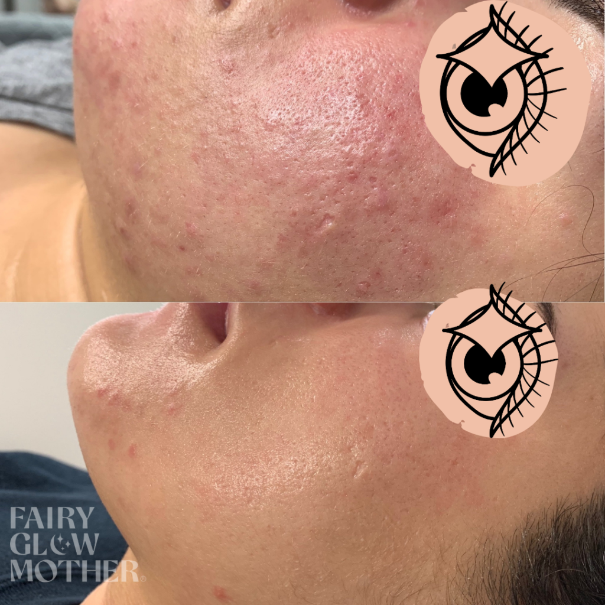
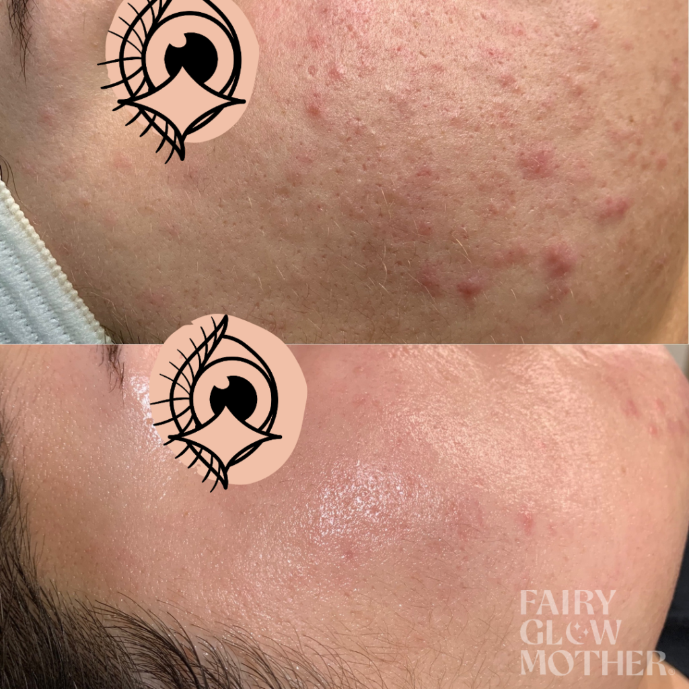

Acne Progress Report: 1 Year
Hadiyah Daché, licensed cosmetologist & esthetician
Acne
1 min
← All articlesThe Book →Friendly reminder: this post contains affiliate links, which help support the Glowdega Archive. If you buy through them, I may earn a commission at no extra cost to you.
Yesterday I was able to see a client I had last seen in January 2020 BC (Before COVID-19). I'm sharing these before and after photos not just because her skin looks great but because it's proof of what a good routine can do for you. Clear skin, smooth skin—whatever your glow goals may be—is possible with the right products tailored for you.
The before photos are from her very first appointment with me in September 2019 and the after photos are March 2021.
The Routine
AM:
PCA Skin BPO 5%
Laneige Cream Skin
Bliss Glow & Hydrate
11% Mandelic Acid
Clinique Moisture Surge
Elta MD UV Clear SPF
PM:
PCA Skin BPO 5%
Laneige Cream Skin
PCA Skin Pigment Gel/Tretinoin RX (alternated)
Clinique Moisture Surge OR PCA Skin Clearskin
The Progress
And in the photos below the before is 2 weeks after her first visit. The after is yesterday.

